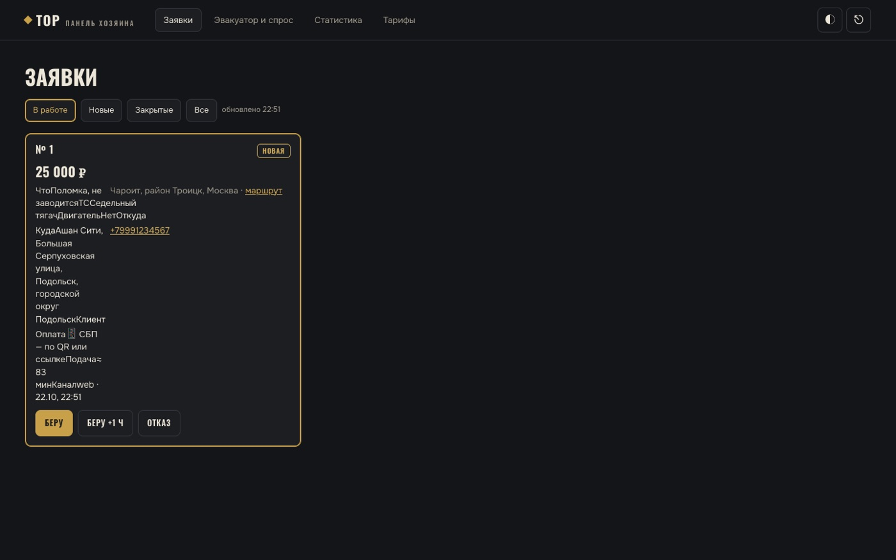
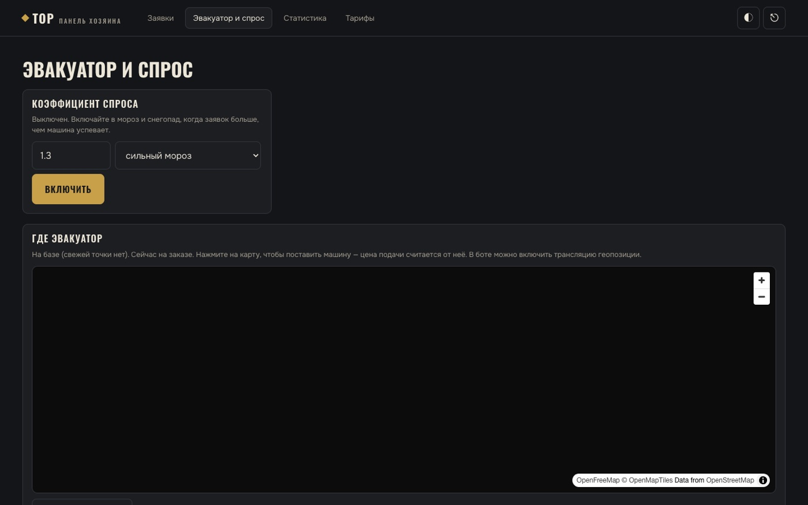
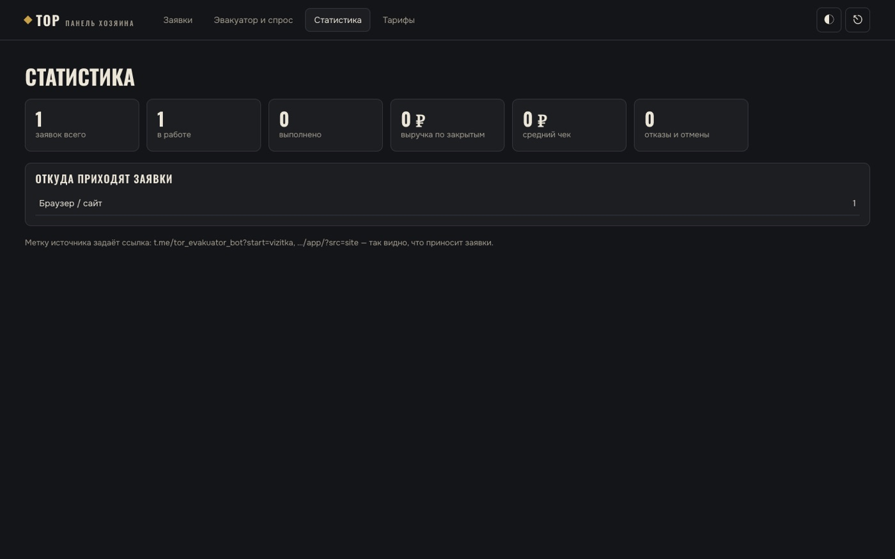

Работающий инструмент, а не картинка: мини-приложение в MAX и Telegram, бот, сайт и панель хозяина. Клиент видит цену по грузовому маршруту и отправляет заявку — хозяин принимает её в один тап.
Расчёт идёт по грузовому маршруту, а не по легковому. Пример из теста: Подольск → база в Наро-Фоминске — 105 км для фуры против 69 км по легковому навигатору. На одном возврате это 36 км × 94 ₽, которые служба недобирала бы.
Клиент получает сумму с разбивкой сам, хозяину не нужно считать по телефону за рулём. Звонок остаётся — кнопка «Позвонить» на каждом экране.
Кардан, расторможка, расцепка, простой — водитель предлагает в приложении, клиент жмёт «Согласен». При оплате сумма не становится сюрпризом.
Хозяин включает сам, с причиной «сильный мороз» или «снегопад». Клиент видит его строкой до заказа — без торга и обид.
Тип ТС, прицеп, груз, нет воздуха — до выезда. Меньше повторных поездок за оборудованием.
QR на визитке, сайт, бот, MAX — в статистике видно, что реально приносит заказы и куда вкладываться.
Мессенджер по умолчанию в России: 86,3 млн пользователей в месяц против 75,7 млн у Telegram (июнь 2026). Водителю не нужно ставить ничего нового — приложение открывается внутри чата, как у Telegram.
Mediascope в пересказе techora.ru, 21.07.2026
При этом звонок не отменяем: 65 % людей предпочитают переписку, но не для аварийных служб. Поэтому в продукте и чат, и телефон, и заявка «из звонка» в панели — следующим шагом.
Опрос Новофона, 1 600 человек, retail.ru, 17.12.2025
Для клиента-перевозчика каждый час простоя — деньги: по Уставу автотранспорта (259-ФЗ, ст. 34) за просрочку доставки — до 9 % провозной платы за сутки. Рейс 150 000 ₽ — до 13 500 ₽ штрафа в день.
Отсюда то, что ценят логисты: цена сразу, понятное время подачи, машина на карте, счёт с НДС и акт.
259-ФЗ ст. 34 ч. 3; пример расчёта — наш
Оплата по СБП: 0,4–0,7 % комиссии против 1,5–2,2 % у эквайринга карт.
Контур, Яндекс Пэй, 2026
Отдельный адрес, вход по коду из Telegram-бота — только у владельца. Работает на компьютере и телефоне.



| Telegram | бот @tor_evakuator_bot: анкета, расчёт, заявка, статусы, кнопки хозяина; мини-приложение из меню бота |
| MAX | мини-приложение готово (вход MAX поддержан); бот MAX подключаем следующим шагом |
| Сайт службы | тор.вебверфь.рф — описание, тарифы, калькулятор |
| Маршруты | грузовой профиль: высота 4 м, масса 32 т |
| Проверка | автотесты сценария и 53 проверки экранов на ширинах 320–430 px, тёмная и светлая тема |